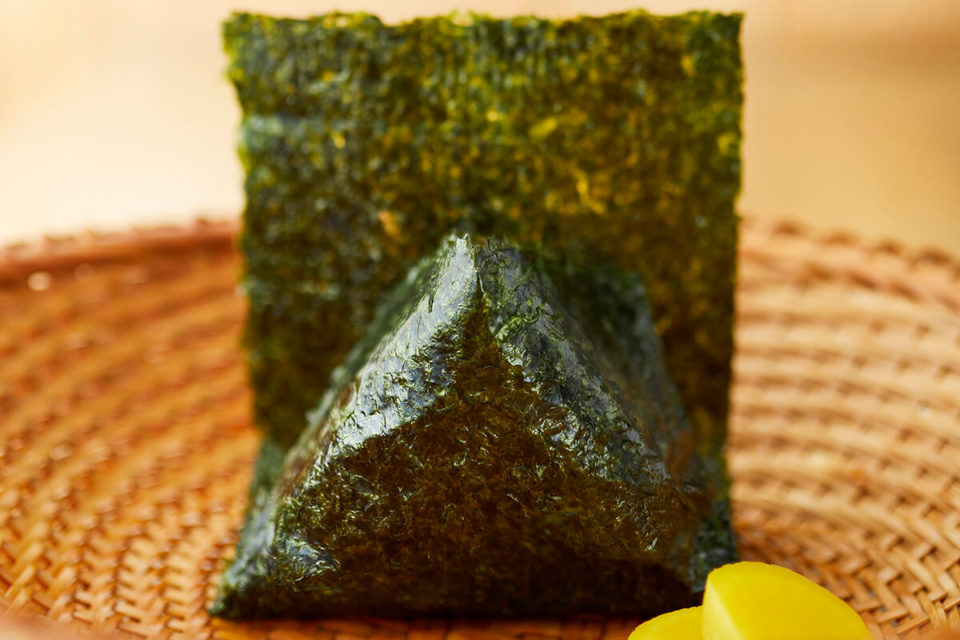
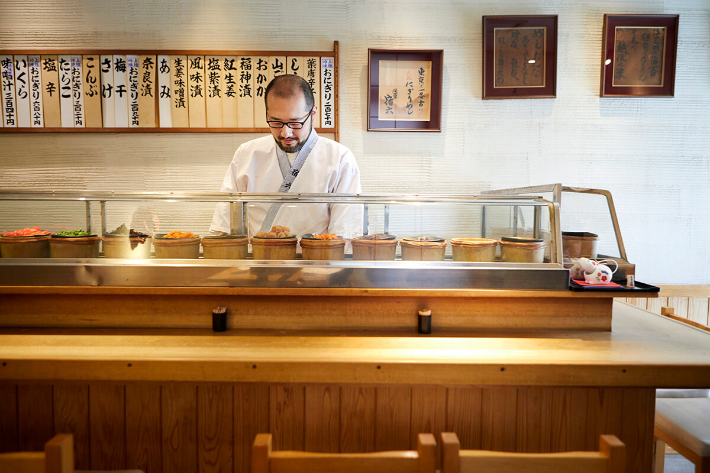
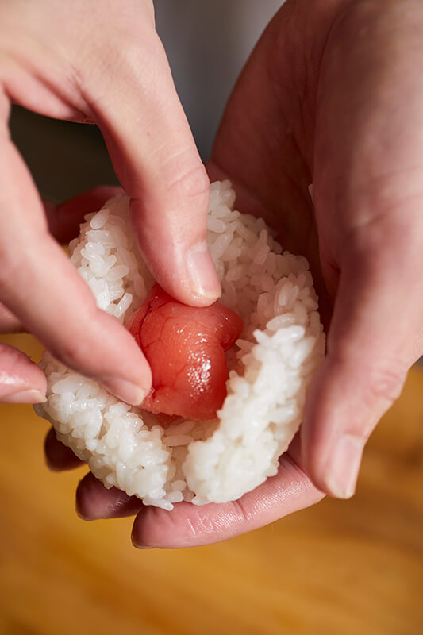
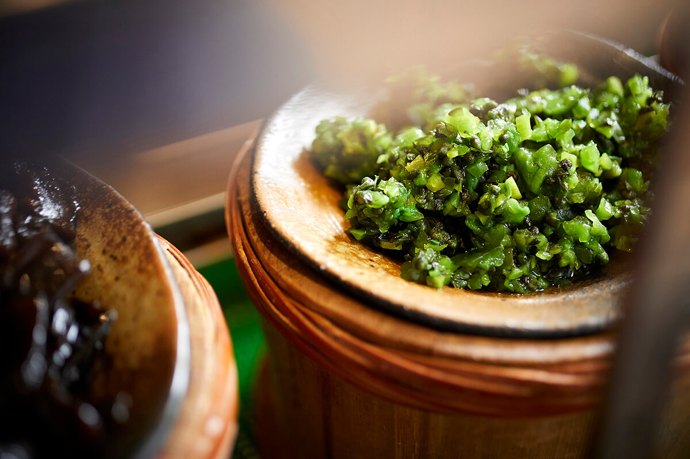
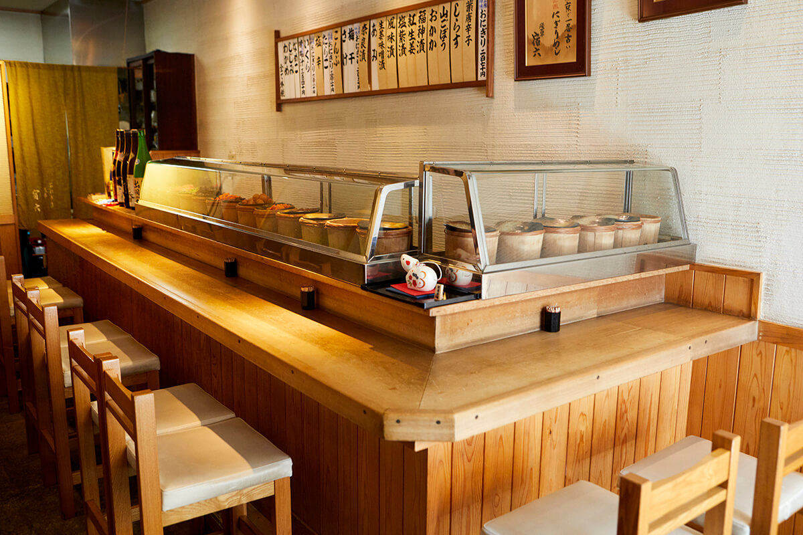

Токио · Асакуса · еда
«Ядороку» в Асакусе: старейшая онигири-лавка Токио и её рисовые шарики с 1954 года

Онигири, рисовый шарик в листе нори, японцы едят с детства. В Асакусе с 1954 года работает лавка, которая делает только онигири, и попробовать их сюда приезжают даже из других стран.
История
Как рис стал шариком
Онигири появился там, где рис стал главной едой. Считается, что история рисовых шариков начинается в эпоху Яёй, когда на японских островах появились заливные рисовые поля. В эпоху Хэйан делали «тондзики», плотные комки риса, приготовленного на пару, и их называют одним из предков онигири. Потом на долгие века рисовый шарик стал походной едой воинов: его брали с собой на войну. Привычный вид с листом нори сложился в середине эпохи Эдо, когда в Японии начали выращивать водоросли нори. А в каждый дом онигири пришёл в годы быстрого экономического роста после войны.
Лавок, где делают только онигири, в Японии немало, но старейшая в Токио это «Ядороку» в Асакусе. Её открыли в 1954 году, когда белый рис ещё был роскошью и его называли «гин-сяри», «серебряный рис».
«На старом токийском наречии "ядо" значит "дом", а "року" значит "непутёвый". Дед в те годы любил погулять, бабушка смотрела-смотрела на это и открыла лавку»
владелец «Ядороку» в третьем поколении
Лавка
Вечером хозяйка, днём внук
Долгое время лавка работала только вечером, и за стойкой стояла хозяйка второго поколения, мать нынешнего владельца. В 2020 году она по-прежнему вставала за стойку по вечерам. Около 2010 года сын решил открыть лавку и днём, но рецепта ему никто не передал.

«С детства я ел дорогие онигири, которые делала бабушка»
владелец «Ядороку» в третьем поколении
На вкусе, который он запомнил с детства, владелец и построил свою работу. Он сам разбирался в теории: как меняется крахмал в рисе, как действует фермент амилаза. Первое время днём, по его словам, в лавке не было ни души, но вкус сделал своё дело. К 2020 году за онигири сюда шли не только японцы, но и гости из-за границы, а сама лавка вошла в список Bib Gourmand гида «Мишлен».
На стене висит шуточное изречение, которое написал друг основательницы: «Рис и женщины не надоедают никогда. Аппетит и влечение хороши в меру, для здоровья».
Мастерство
Три движения поперёк и одно вдоль
«Не хочу навязывать гостям свои принципы. Ешьте и чувствуйте сами»
владелец «Ядороку» в третьем поколении
Вот как владелец лепит онигири с лососем. Сначала он втирает соль в ладони, кладёт рис в форму и добавляет начинку. Потом быстро сжимает шарик три раза поперёк и один раз вдоль и заворачивает в нори. С первым укусом хрустит лист и поднимается запах водорослей. Рис в меру мягкий, его сладость раскрывается, пока жуёшь, и вместе с мягкой солоноватостью лосося даёт ощущение роскоши и покоя одновременно.

Рис для лавки выбирают раз в год. Когда в продажу выходит рис нового урожая, владелец пробует от 20 до 30 сортов и берёт тот, на котором будет работать весь следующий год. Смотрит он на силу аромата и насыщенность вкуса.
«Самый яркий вкус у начинки, за ней идёт нори. Рис не должен им уступать. Я думаю о том, как ляжет соль, когда всё соединится вместе»
владелец «Ядороку» в третьем поколении
Начинки
Еда для простых людей
Нори в лавке обычные, токийские. Начинок 17, и их набор не менялся с открытия. Продукты выбирают по всей Японии и на рыбном рынке Тоёсу, но слишком дорогих не берут: онигири остаётся едой простых людей.

Мелочей, о которых гость не догадается, здесь много. Начинку кладут точно в центр, чтобы первый укус пришёлся на рис. А чтобы постоянным гостям не приедалось, мастер пользуется несколькими видами соли.
«Мы не круглосуточный магазин и не сеть, поэтому я не стараюсь, чтобы каждый день вкус был одинаковым. Я просто делаю онигири, которые сам считаю самыми вкусными»
владелец «Ядороку» в третьем поколении

Владельца приглашали лепить онигири на мастер-классах в Италии, Франции, Германии и Дубае, а в Японии он помогает разрабатывать новые продукты. О будущем онигири он говорит так.
«Суши тоже готовят из риса. Сначала были простые лавки, потом мастера своим трудом создали дорогие рестораны, а рядом распространились суши на конвейере. Онигири станут лучше, если и у них будет выбор: например, в каждом краю свои лавки на местном рисе и местных продуктах. Хочется, чтобы это была не мода на сезон, а подъём всего дела»
владелец «Ядороку» в третьем поколении
Онигири «Ядороку»
- Адрес
- Токио, район Тайто, Асакуса, 3-9-10
- Телефон
- +81 3-3874-1615
- Часы работы
- днём с 11:30, вечером с 18:00, до конца риса
- Выходные
- днём воскресенье, вечером вторник и среда
Фото: Кэндзи Окадзаки.